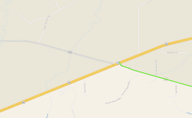
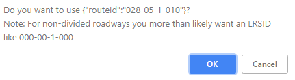
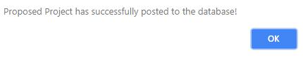

LA DOTD Mileposts
This application was created by DOTD GIS in August of 2018.
Mileposts are at one mile intervals if a post exists along the Interstates.
The data was derived from video log data. Locations of mileposts are subject to
inaccuracies and are not necessarily the actual mileage along the route. DOTD
does not guarantee the accuracy of this data and should be used only as a reference.
The data is from 2012-2014 and was digitized into GIS in 2017.
This is a step by step guide to help add a prosed project.
The side panel allows you to enter information about the project before drawing it.
You can also allow the system to automatically populate the majority of the fields for you.
When drawing the project, you need to be zoomed in to verify that you're drawing on the roads.
A zoom level like the following screenshot should be good:

After drawing the project, you will see a confirmation box like below:

This box will only display if you put a project on a non-divided roadway.
Click OK if you want to use the route mentioned in the box; otherwise click Cancel.
After clicking OK or Cancel, you'll notice that the attribute fields have been filled in.
You can change any of the values in the box or you can click Clear Fields to start all over.
Once you have the correct information in the attribute boxes, click Submit.
If the project was successfully submitted to the database, you'll see this alert:

Mileposts & Milepoints
| Route: | |
|---|---|
| Milepoint: | |
| Milepost: | |
| Latitude: | |
| Longitude: |